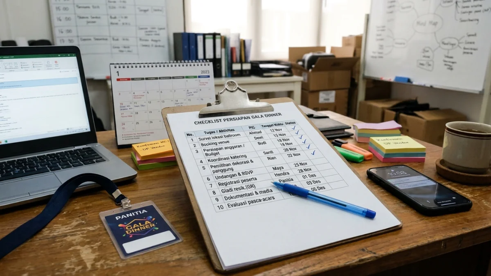

Anggaran gala dinner disusun dengan menghitung jumlah tamu, biaya tempat, katering, hiburan, dekorasi, teknis, dokumentasi, dan dana cadangan, lalu menyesuaikannya dengan tujuan acara.
- Anggaran gala dinner dimulai dari jumlah tamu dan tujuan acara.
- Komponen utama meliputi venue, katering, hiburan, dekorasi, teknis, dokumentasi, dan dana cadangan.
- Biaya per tamu membantu panitia membandingkan penawaran vendor secara adil.
- Pemesanan lebih awal dan negosiasi paket membantu menekan biaya tanpa menurunkan kualitas.
DAFTAR ISI
- 1. Apa Saja Komponen Biaya dalam Anggaran Gala Dinner?
- 2. Bagaimana Cara Menghitung Biaya per Tamu Gala Dinner?
- 3. Berapa Dana Cadangan yang Sebaiknya Disiapkan?
- 4. Bagaimana Memilih Tempat yang Sesuai Anggaran?
- 5. Bagaimana Menghemat Biaya Gala Dinner tanpa Menurunkan Kualitas?
- 6. Bagaimana Checklist Persiapan Gala Dinner dari Awal sampai Hari Acara?
- 7. Kesalahan Umum dalam Menyusun Anggaran Gala Dinner
- 8. Kesimpulan
- 9. FAQ
Apa Saja Komponen Biaya dalam Anggaran Gala Dinner?
Komponen biaya gala dinner meliputi sewa tempat, katering, hiburan, dekorasi, tata suara dan cahaya, pembawa acara, dokumentasi, cenderamata, transportasi, perizinan, serta dana cadangan.
Katering umumnya menjadi pos terbesar karena dihitung per orang. Sewa venue bergantung pada kapasitas, lokasi, dan fasilitas yang sudah termasuk. Hiburan dan pembawa acara bervariasi menurut reputasi dan durasi tampil.
Dekorasi, tata suara, cahaya, dan layar menjadi pos teknis yang sering diremehkan. Dokumentasi foto dan video, cenderamata, undangan, serta kebutuhan keamanan dan parkir juga perlu dihitung.
Pada 2026, permintaan acara bisnis cukup aktif, dan RRI pada 30 Juli 2026 melaporkan Indonesia menerima 1,38 juta wisatawan mancanegara pada Mei 2026 serta sekitar 106 juta perjalanan wisatawan domestik.
Aktivitas pariwisata yang tinggi dapat memengaruhi ketersediaan venue, sehingga pemesanan lebih awal dianjurkan.
Bagaimana Cara Menghitung Biaya per Tamu Gala Dinner?
Biaya per tamu dihitung dengan membagi total anggaran acara dengan jumlah tamu, lalu membandingkannya dengan tawaran vendor agar keputusan anggaran lebih objektif dan terukur.
Rumus dasarnya adalah total biaya dibagi jumlah tamu. Bila total anggaran Rp150 juta dan jumlah tamu 150 orang, biaya per tamu adalah Rp1 juta. Angka ini hanya contoh hitungan, bukan standar harga.
Panitia sebaiknya memisahkan biaya tetap dan biaya variabel. Biaya tetap, seperti panggung dan dekorasi, tidak banyak berubah meski jumlah tamu bertambah.
Biaya variabel, seperti katering dan cenderamata, naik seiring jumlah tamu. Pemisahan ini memudahkan simulasi bila jumlah tamu berubah mendekati hari acara.
Berapa Dana Cadangan yang Sebaiknya Disiapkan?
Dana cadangan gala dinner umumnya disiapkan sekitar lima sampai sepuluh persen dari total anggaran untuk menutup biaya tak terduga, tergantung kompleksitas acara dan kondisi vendor.
Biaya tak terduga dapat muncul dari penambahan tamu, perubahan jadwal, kebutuhan teknis tambahan, atau lembur kru. Dana cadangan memberi ruang bernapas agar panitia tidak harus memangkas kualitas di menit terakhir.
Persentase ini bersifat umum dan dapat bervariasi. Acara yang melibatkan banyak vendor atau berlangsung di tempat terbuka biasanya membutuhkan cadangan lebih besar karena risiko cuaca dan teknis lebih tinggi.
Catat penggunaan dana cadangan secara transparan dan laporkan kepada pihak penanggung jawab anggaran.
Bagaimana Memilih Tempat yang Sesuai Anggaran?
Memilih tempat yang sesuai anggaran berarti membandingkan kapasitas, fasilitas, lokasi, biaya sewa, dan aturan tempat, lalu memilih opsi yang paling mendukung tujuan acara dan kenyamanan tamu.
Periksa apa saja yang sudah termasuk dalam paket sewa, misalnya meja, kursi, tata suara, panggung, dan listrik.
Tanyakan pula biaya tambahan seperti lembur, parkir, atau denda bila acara melebihi waktu. Kunjungi lokasi secara langsung untuk menilai akses, parkir, dan kondisi ruangan.
Pertimbangkan aksesibilitas bagi tamu dari luar kota, seperti jarak dari bandara atau stasiun serta ketersediaan penginapan.
Venue yang menyediakan paket lengkap kadang lebih efisien daripada menyewa semuanya terpisah. Bandingkan minimal tiga penawaran agar memperoleh gambaran biaya yang wajar.
Bagaimana Menghemat Biaya Gala Dinner tanpa Menurunkan Kualitas?
Penghematan biaya gala dinner dapat dilakukan dengan memesan lebih awal, menegosiasikan paket, menyederhanakan dekorasi, memprioritaskan pos yang paling terlihat tamu, dan memilih hari yang tidak terlalu ramai.
Pesan venue dan vendor sejak dini karena harga dan ketersediaan umumnya lebih baik. Negosiasikan paket gabungan, misalnya venue dan katering sekaligus.
Pilih dekorasi yang fokus pada satu titik utama, seperti panggung atau pintu masuk, daripada menghias seluruh ruangan.
Prioritaskan kualitas pada hal yang paling dirasakan tamu, yaitu makanan, kenyamanan, dan suara yang jelas. Pertimbangkan hari kerja atau jadwal di luar musim ramai bila memungkinkan.
Gunakan perlengkapan yang dapat dipakai ulang agar mengurangi limbah. Hemat tidak berarti mengorbankan keselamatan dan kebersihan.
Bagaimana Checklist Persiapan Gala Dinner dari Awal sampai Hari Acara?
Checklist persiapan gala dinner disusun mundur dari hari acara, mencakup penetapan tujuan, pemesanan venue, pemilihan vendor, undangan, gladi resik, dan evaluasi setelah acara selesai.

Checklist persiapan gala dinner membantu panitia memantau alur kerja dan anggaran tepat waktu. (Ilustrasi)Berikut garis besar yang dapat disesuaikan.
- Sekitar dua sampai tiga bulan sebelum: tetapkan tujuan, anggaran, jumlah tamu, dan tanggal, lalu pesan venue
- Sekitar satu sampai dua bulan sebelum: pilih katering, hiburan, pembawa acara, dan vendor teknis
- Sekitar empat sampai enam minggu sebelum: kirim undangan lengkap dengan dress code dan permintaan konfirmasi
- Sekitar dua minggu sebelum: finalkan rundown, denah tempat duduk, dan jumlah menu
- Satu minggu sebelum: lakukan gladi resik dan cek ulang perlengkapan
- Hari acara: pastikan koordinasi tim, registrasi, dan dokumentasi berjalan
- Setelah acara: bayar sisa tagihan, kumpulkan masukan, dan buat laporan evaluasi
Jadwal ini bersifat umum dan dapat dipercepat atau diperpanjang sesuai skala acara.
Kesalahan Umum dalam Menyusun Anggaran Gala Dinner
Kesalahan umum penyusunan anggaran gala dinner meliputi tidak menyediakan dana cadangan, melupakan biaya tersembunyi, menaksir jumlah tamu terlalu rendah, dan tidak mencatat pengeluaran secara disiplin.
Biaya tersembunyi sering muncul dari pajak, biaya layanan, lembur kru, parkir, dan perizinan. Menaksir jumlah tamu terlalu rendah membuat pesanan katering kurang dan harus ditambah dengan harga yang lebih mahal. Sebaliknya, taksiran terlalu tinggi memboroskan anggaran.
Kesalahan lain adalah tidak membandingkan penawaran vendor dan menyetujui harga pertama. Panitia juga perlu mencatat setiap pengeluaran dalam satu lembar kerja agar mudah dipantau. Tanpa pencatatan yang rapi, selisih anggaran baru terlihat setelah acara selesai, ketika sulit diperbaiki.
Kesimpulan
Anggaran gala dinner yang sehat dimulai dari tujuan dan jumlah tamu, mencakup seluruh komponen biaya, menyediakan dana cadangan, dan dicatat disiplin dari awal hingga evaluasi akhir.
Hitung biaya per tamu, bandingkan minimal tiga penawaran vendor, dan pesan lebih awal. Prioritaskan pos yang paling dirasakan tamu.
Pastikan juga tamu mengetahui aturan berpakaian dengan membaca dress code gala dinner untuk pria dan wanita agar penataan visual acara selaras dengan anggaran dekorasi.